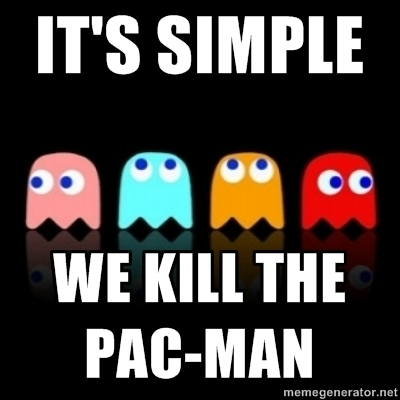
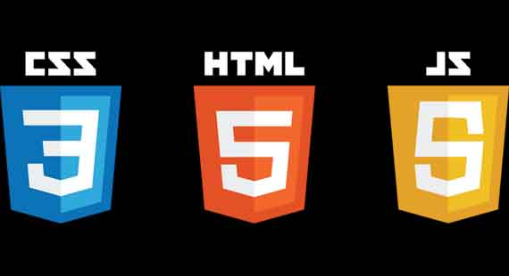
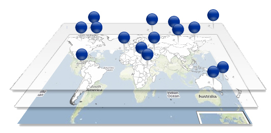
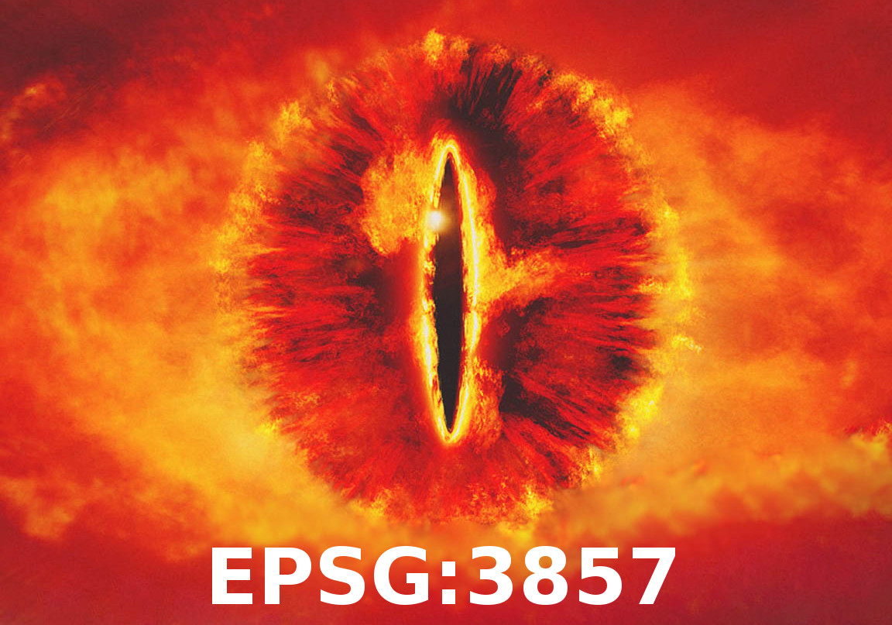

Let's Make a Map
oh hai
Tobin Bradley
fuzzytolerance.info
@fuzzytolerance
Credit to:
leafletjs.com
@lyzidiamond
Leaflet
tiny, fast, mobile-friendly, and simple

You need
nuthin
(text editor if you want to code)
Quick intro to web pages

Basic web mapping concepts
Tiles
Layers

raster & vector

FIN
github.com/tobinbradley
fuzzytolerance.info
@fuzzytolerance
tobin.bradley@gmail.com